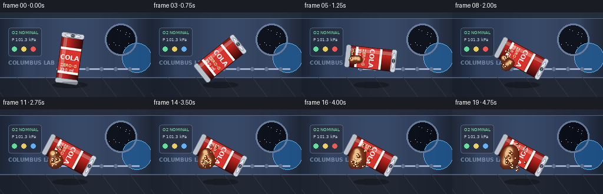
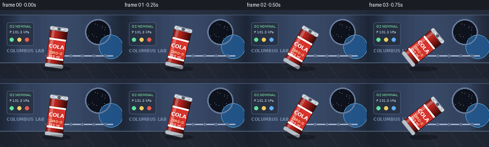

CODING AGENTS AS PIXEL WORLD MODELS
traex/Seed-2.1-Pro-0915 · phygen_005
点击播放 · 原生 RGB 像素
逐轮保存的候选
回放视频、检查图与代码变化。
每份候选均可单独播放。实际图片检查记录在下方工具轨迹中。
候选 01播放与检查图
点击播放 · 原生 RGB 像素


展开代码变化
--- 上一保存版本
+++ 本次保存版本
@@ -0,0 +1,464 @@
+"""Microgravity soda pour: 20 RGB frames, 256x144, 4 fps, pure numpy/PIL.
+
+A soda can tilts and releases cola into a space-station interior. In
+microgravity the liquid forms glossy surface-tension blobs that detach and
+float away rather than a gravity-driven stream. All geometry, motion and
+shading are procedural; no external assets or models are used.
+"""
+from pathlib import Path
+import math
+
+import numpy as np
+from PIL import Image, ImageDraw, ImageFont
+
+import artifact_io
+
+W, H, N, FPS = 256, 144, 20, 4.0
+rng = np.random.default_rng(7)
+
+# ---------------------------------------------------------------------------
+# Background: space-station interior, built once and gently animated.
+# ---------------------------------------------------------------------------
+FONT_BOLD = "/usr/share/fonts/truetype/dejavu/DejaVuSans-Bold.ttf"
+FONT_REG = "/usr/share/fonts/truetype/dejavu/DejaVuSans.ttf"
+
+
+def make_background():
+ img = Image.new("RGB", (W, H), (12, 16, 24))
+ d = ImageDraw.Draw(img)
+
+ # Curved hull: vertical panel gradients.
+ for x in range(W):
+ u = x / W
+ # soft vignette plus two hull-side light bands
+ shade = 0.55 + 0.45 * math.cos((u - 0.5) * math.pi)
+ band = 0.12 * math.exp(-((u - 0.18) ** 2) / 0.004)
+ band += 0.12 * math.exp(-((u - 0.82) ** 2) / 0.004)
+ v = int(np.clip(shade * 0.85 + band, 0, 1) * 255)
+ d.line([(x, 0), (x, H)], fill=(int(v * 0.22), int(v * 0.30), int(v * 0.44)))
+
+ # Floor / deck band with a perspective seam.
+ d.rectangle([0, H - 34, W, H], fill=(24, 30, 42))
+ d.line([(0, H - 34), (W, H - 34)], fill=(70, 86, 110), width=2)
+ for gx in range(-20, W + 40, 48):
+ d.line([(gx, H - 34), (gx + 26, H)], fill=(40, 50, 66))
+
+ # Ceiling rail.
+ d.rectangle([0, 0, W, 10], fill=(30, 38, 54))
+ d.line([(0, 10), (W, 10)], fill=(78, 96, 124), width=1)
+
+ # Circular porthole with Earth limb.
+ px, py, pr = 205, 46, 24
+ d.ellipse([px - pr - 3, py - pr - 3, px + pr + 3, py + pr + 3],
+ outline=(96, 116, 148), width=3)
+ d.ellipse([px - pr, py - pr, px + pr, py + pr], fill=(6, 10, 20))
+ # stars inside window
+ srng = np.random.default_rng(3)
+ for _ in range(14):
+ sx = px + (srng.random() * 2 - 1) * pr * 0.85
+ sy = py + (srng.random() * 2 - 1) * pr * 0.85
+ if (sx - px) ** 2 + (sy - py) ** 2 < (pr - 2) ** 2:
+ d.point((int(sx), int(sy)), fill=(200, 214, 235))
+ # Earth crescent
+ d.ellipse([px + 2, py + 6, px + pr * 2 + 4, py + pr * 2 + 8],
+ fill=(28, 78, 130))
+ d.ellipse([px + 2, py + 6, px + pr * 2 + 4, py + pr * 2 + 8],
+ outline=(90, 170, 220), width=1)
+ d.ellipse([px - pr, py - pr, px + pr, py + pr], fill=(6, 10, 20))
+ # re-cut the window circle so Earth only shows through it
+ mask = Image.new("L", (W, H), 0)
+ md = ImageDraw.Draw(mask)
+ md.ellipse([px - pr, py - pr, px + pr, py + pr], fill=255)
+ window = Image.new("RGB", (W, H), (0, 0, 0))
+ wd = ImageDraw.Draw(window)
+ wd.ellipse([px - pr, py - pr, px + pr, py + pr], fill=(6, 10, 20))
+ for _ in range(14):
+ sx = px + (srng.random() * 2 - 1) * pr * 0.85
+ sy = py + (srng.random() * 2 - 1) * pr * 0.85
+ if (sx - px) ** 2 + (sy - py) ** 2 < (pr - 2) ** 2:
+ wd.point((int(sx), int(sy)), fill=(200, 214, 235))
+ wd.ellipse([px + 2, py + 6, px + pr * 2 + 4, py + pr * 2 + 8],
+ fill=(26, 74, 124))
+ wd.arc([px + 2, py + 6, px + pr * 2 + 4, py + pr * 2 + 8], 200, 330,
+ fill=(110, 190, 235), width=1)
+ img.paste(window, (0, 0), mask)
+ d = ImageDraw.Draw(img)
+ d.ellipse([px - pr - 3, py - pr - 3, px + pr + 3, py + pr + 3],
+ outline=(96, 116, 148), width=3)
+
+ # Wall-mounted equipment panels on the left.
+ d.rounded_rectangle([14, 26, 70, 74], radius=4, fill=(34, 44, 62),
+ outline=(72, 90, 118))
+ fb = ImageFont.truetype(FONT_BOLD, 9)
+ fr = ImageFont.truetype(FONT_REG, 7)
+ d.text((20, 30), "O2 NOMINAL", font=fr, fill=(120, 220, 160))
+ d.text((20, 42), "P 101.3 kPa", font=fr, fill=(180, 196, 220))
+ for i, c in enumerate([(90, 220, 150), (230, 200, 90), (90, 170, 240)]):
+ d.ellipse([20 + i * 16, 58, 28 + i * 16, 66], fill=c)
+ d.text((14, 80), "COLUMBUS LAB", font=fb, fill=(110, 130, 160))
+
+ # Handrails.
+ d.line([(96, 96), (236, 96)], fill=(150, 168, 196), width=3)
+ for rx in range(100, 240, 24):
+ d.ellipse([rx - 3, 93, rx + 3, 99], fill=(90, 106, 132))
+ return np.asarray(img, dtype=np.float32)
+
+
+BACKGROUND = make_background()
+
+
+def animated_background(t):
+ """Subtle drifting light and blinking status LED."""
+ bg = BACKGROUND.copy()
+ sweep = 0.5 + 0.5 * math.sin(t * 0.9)
+ grad = np.zeros((H, W, 1), dtype=np.float32)
+ cx = W * (0.3 + 0.4 * sweep)
+ xs = np.arange(W)[None, :]
+ grad[:, :, 0] = np.exp(-((xs - cx) ** 2) / (2 * 90.0 ** 2)) * 10
+ bg += grad
+ img = Image.fromarray(np.clip(bg, 0, 255).astype(np.uint8))
+ if int(t * 2) % 2 == 0:
+ ImageDraw.Draw(img).ellipse([52, 58, 60, 66], fill=(240, 90, 80))
+ return img
+
+
+# ---------------------------------------------------------------------------
+# Soda can: drawn upright into an RGBA tile, then rotated about its center.
+# ---------------------------------------------------------------------------
+CW, CH = 56, 96 # upright can tile size
+
+
+def make_can():
+ tile = Image.new("RGBA", (CW, CH), (0, 0, 0, 0))
+ d = ImageDraw.Draw(tile)
+ x0, x1 = 10, CW - 10
+ fb = ImageFont.truetype(FONT_BOLD, 11)
+ fs = ImageFont.truetype(FONT_REG, 7)
+
+ # Body silhouette (slightly rounded shoulders).
+ d.rounded_rectangle([x0, 8, x1, CH - 8], radius=6,
+ fill=(196, 38, 32), outline=(120, 18, 14), width=1)
+ # Cylindrical shading.
+ shade = Image.new("L", (CW, CH), 0)
+ sd = ImageDraw.Draw(shade)
+ sd.rounded_rectangle([x0, 8, x1, CH - 8], radius=6, fill=255)
+ grad = np.zeros((CH, CW), dtype=np.float32)
+ for x in range(x0, x1 + 1):
+ u = (x - x0) / max(1, x1 - x0)
+ grad[:, x] = 0.35 + 0.65 * (1 - abs(u - 0.32) * 1.6)
+ shade_arr = np.asarray(shade, dtype=np.float32) / 255.0
+ body = np.asarray(tile, dtype=np.float32)
+ for c in range(3):
+ body[:, :, c] *= grad
+ body[:, :, 3] = np.asarray(tile)[:, :, 3]
+ tile = Image.fromarray(np.clip(body, 0, 255).astype(np.uint8))
+ d = ImageDraw.Draw(tile)
+
+ # Silver top and bottom rims.
+ d.rounded_rectangle([x0 - 1, 5, x1 + 1, 13], radius=3,
+ fill=(206, 212, 220), outline=(120, 128, 140))
+ d.rounded_rectangle([x0 - 1, CH - 13, x1 + 1, CH - 5], radius=3,
+ fill=(186, 192, 200), outline=(110, 118, 130))
+ # Lid with opening and pull tab.
+ d.ellipse([x0 + 4, 6, x1 - 4, 12], fill=(226, 230, 236),
+ outline=(140, 148, 160))
+ d.ellipse([CW // 2 - 4, 7, CW // 2 + 4, 11], fill=(60, 66, 76))
+ d.rounded_rectangle([CW // 2 - 5, 6, CW // 2 + 5, 9], radius=2,
+ outline=(150, 156, 168), width=1)
+
+ # Label band.
+ d.rectangle([x0 + 1, 30, x1 - 1, 74], fill=(214, 52, 44))
+ d.rectangle([x0 + 1, 30, x1 - 1, 33], fill=(245, 245, 240))
+ d.rectangle([x0 + 1, 71, x1 - 1, 74], fill=(245, 245, 240))
+ label = "COLA"
+ tw = d.textlength(label, font=fb)
+ d.text(((CW - tw) / 2, 40), label, font=fb, fill=(255, 255, 255))
+ d.text((x0 + 4, 56), "ZERO-G", font=fs, fill=(255, 230, 180))
+ d.text((x0 + 4, 64), "330 ml", font=fs, fill=(255, 255, 255))
+
+ # Vertical specular streak.
+ hl = Image.new("RGBA", (CW, CH), (0, 0, 0, 0))
+ hd = ImageDraw.Draw(hl)
+ hd.rounded_rectangle([x0 + 4, 12, x0 + 9, CH - 12], radius=2,
+ fill=(255, 255, 255, 70))
+ tile = Image.alpha_composite(tile, hl)
+ return tile
+
+
+CAN_TILE = make_can()
+
+
+def render_can(angle_deg, mouth):
+ """Rotate the can; return RGBA image and the rotated mouth position."""
+ rot = CAN_TILE.rotate(angle_deg, resample=Image.BICUBIC, expand=True)
+ rw, rh = rot.size
+ # Mouth in upright tile is at top-center; rotate that offset.
+ a = math.radians(angle_deg)
+ dx, dy = mouth[0] - CW / 2, mouth[1] - CH / 2
+ rx = math.cos(a) * dx - math.sin(a) * dy
+ ry = math.sin(a) * dx + math.cos(a) * dy
+ return rot, (rw / 2 + rx, rh / 2 + ry), (rw, rh)
+
+
+# ---------------------------------------------------------------------------
+# Liquid: metaballs evaluated on a cropped grid, with glossy cola shading,
+# internal highlight bubbles and tiny detached droplets.
+# ---------------------------------------------------------------------------
+COLA = np.array([122, 52, 26], dtype=np.float32) # amber cola
+COLA_DARK = np.array([58, 22, 12], dtype=np.float32)
+COLA_GLINT = np.array([255, 214, 150], dtype=np.float32)
+
+
+def metaball_field(xx, yy, balls):
+ """Sum of squared-radius falloffs. balls: list of (x, y, r, strength)."""
+ f = np.zeros_like(xx)
+ for bx, by, br, strength in balls:
+ f += strength * (br ** 2) / ((xx - bx) ** 2 + (yy - by) ** 2 + 1e-3)
+ return f
+
+
+def render_liquid(base_img, balls, droplets, t):
+ if not balls:
+ return
+ xs = [b[0] - b[2] * 1.9 for b in balls] + [b[0] + b[2] * 1.9 for b in balls]
+ ys = [b[1] - b[2] * 1.9 for b in balls] + [b[1] + b[2] * 1.9 for b in balls]
+ x0 = max(0, int(min(xs)))
+ x1 = min(W, int(max(xs)) + 1)
+ y0 = max(0, int(min(ys)))
+ y1 = min(H, int(max(ys)) + 1)
+ if x1 <= x0 or y1 <= y0:
+ return
+ gx, gy = np.meshgrid(np.arange(x0, x1), np.arange(y0, y1))
+ gx = gx.astype(np.float32) + 0.5
+ gy = gy.astype(np.float32) + 0.5
+ field = metaball_field(gx, gy, balls)
+ inside = field >= 1.0
+ if not inside.any():
+ return
+
+ # Shading: depth from field strength, lit from upper-left.
+ strength = np.clip(field / 2.2, 0, 1)
+ # approximate normal via field gradients
+ fy, fx = np.gradient(field)
+ nx = -fx
+ ny = -fy
+ norm = np.sqrt(nx ** 2 + ny ** 2 + 1e-4)
+ nx, ny = nx / norm, ny / norm
+ light = np.clip(0.35 + 0.65 * (nx * -0.5 + ny * -0.7 + 0.6), 0, 1)
+ shade = (0.35 + 0.65 * strength) * (0.6 + 0.4 * light)
+ color = COLA_DARK[None, None, :] + (COLA - COLA_DARK)[None, None, :] * shade[:, :, None]
+
+ # Rim light at the boundary.
+ rim = np.clip((field - 1.0) * 3.0, 0, 1)
+ color = color * (0.75 + 0.25 * rim[:, :, None])
+
+ # Specular glints: small offset toward the light side of each big blob.
+ glint = np.zeros_like(field)
+ for bx, by, br, _ in balls:
+ if br < 3.5:
+ continue
+ hx, hy = bx - br * 0.32, by - br * 0.36
+ glint += (br * 0.42) ** 2 / ((gx - hx) ** 2 + (gy - hy) ** 2 + 1e-3)
+ spec = np.clip((glint - 0.35) * 1.4, 0, 1) * inside
+ color = color * (1 - spec[:, :, None] * 0.85) + COLA_GLINT[None, None, :] * (spec[:, :, None] * 0.85)
+
+ # Trapped micro-bubbles drifting inside the liquid.
+ bubble_rng = np.random.default_rng(11)
+ for bx, by, br, _ in balls:
+ if br < 5:
+ continue
+ for k in range(3):
+ ang = t * 1.3 + k * 2.1 + bx
+ rad = br * (0.25 + 0.18 * ((k + 1) % 2))
+ qx = bx + math.cos(ang) * rad
+ qy = by + math.sin(ang * 0.8 + 1.0) * rad
+ rr = 0.8 + 0.5 * (k % 2)
+ m = ((gx - qx) ** 2 + (gy - qy) ** 2) <= rr ** 2
+ color[m] = color[m] * 0.4 + np.array([255, 226, 180]) * 0.6
+
+ region = base_img[y0:y1, x0:x1].astype(np.float32)
+ alpha = inside.astype(np.float32)[:, :, None] * 0.96
+ region = region * (1 - alpha) + color * alpha
+ base_img[y0:y1, x0:x1] = np.clip(region, 0, 255)
+
+ # Droplets rendered as little glossy spheres.
+ pil_view = Image.fromarray(base_img.astype(np.uint8))
+ draw = ImageDraw.Draw(pil_view)
+ for dx, dy, dr in droplets:
+ if dr <= 0.5 or not (0 <= dx < W and 0 <= dy < H):
+ continue
+ x0d, y0d, x1d, y1d = dx - dr, dy - dr, dx + dr, dy + dr
+ draw.ellipse([x0d, y0d, x1d, y1d], fill=tuple(COLA.astype(int)),
+ outline=(90, 40, 22))
+ hx, hy = dx - dr * 0.35, dy - dr * 0.4
+ draw.ellipse([hx - dr * 0.28, hy - dr * 0.28,
+ hx + dr * 0.28, hy + dr * 0.28],
+ fill=(255, 226, 170))
+ base_img[:] = np.asarray(pil_view).astype(np.float32)
+
+
+# ---------------------------------------------------------------------------
+# Simulation / scene choreography.
+# ---------------------------------------------------------------------------
+CAN_PIVOT = (118, 78) # fixed pivot in screen space
+MOUTH_LOCAL = (CW / 2, 6) # mouth position inside upright tile
+
+
+def can_angle(frame):
+ # Upright (0) tilts toward the right, mouth pointing up-right, ~ -115 deg.
+ target = -118.0
+ p = min(1.0, frame / 7.0)
+ ease = p * p * (3 - 2 * p)
+ return -8.0 + (target + 8.0) * ease
+
+
+def build_schedule():
+ """Detached blobs and droplets with ballistic (straight drift) paths."""
+ blobs = []
+ brng = np.random.default_rng(21)
+ # Each blob: birth frame, start pos, velocity per frame, radius growth plan.
+ for i in range(7):
+ birth = 5 + i * 2 + int(brng.integers(0, 2))
+ r0 = float(brng.uniform(4.5, 8.5))
+ blobs.append({
+ "birth": birth,
+ "r": r0,
+ "ang": brng.uniform(0, math.tau),
+ "speed": brng.uniform(1.1, 2.0),
+ "spread": brng.uniform(0, 14),
+ "seed": float(brng.uniform(0, 10)),
+ })
+ droplets = []
+ for i in range(26):
+ birth = 4 + int(brng.integers(0, 14))
+ droplets.append({
+ "birth": birth,
+ "r": float(brng.uniform(1.0, 2.2)),
+ "ang": brng.uniform(-0.9, 0.9),
+ "speed": brng.uniform(1.6, 3.2),
+ "off": brng.uniform(-6, 6),
+ })
+ return blobs, droplets
+
+
+BLOBS, DROPLETS = build_schedule()
+
+
+def liquid_state(frame, mouth_xy, angle):
+ """Emitters live at the can mouth; everything drifts inertially."""
+ t = frame / FPS
+ # Ejection direction: along the can axis past the mouth.
+ a = math.radians(angle)
+ axis = np.array([-math.sin(a), math.cos(a)]) # points out of the lid
+ side = np.array([axis[1], -axis[0]])
+ balls = []
+
+ # A connected "neck" of metaballs bridging mouth to the first free blob,
+ # only while pouring is active.
+ if frame >= 4:
+ neck_n = 3
+ for k in range(neck_n):
+ frac = (k + 1) / neck_n
+ wob = math.sin(t * 6 + k) * 1.4
+ px = mouth_xy[0] + axis[0] * (6 + frac * 16) + side[0] * wob
+ py = mouth_xy[1] + axis[1] * (6 + frac * 16) + side[1] * wob
+ balls.append((px, py, 3.2 + 1.8 * frac, 1.0))
+
+ for b in BLOBS:
+ age = frame - b["birth"]
+ if age < 0:
+ continue
+ # Birth slightly outside the mouth along the axis.
+ start = np.array(mouth_xy_at_birth(b["birth"])) + axis_at_birth(b["birth"]) * 10
+ direction = axis_at_birth(b["birth"]) + side_at_birth(b["birth"]) * (b["spread"] / 14.0)
+ direction = direction / np.linalg.norm(direction)
+ pos = start + direction * b["speed"] * age
+ # Gentle surface-tension breathing, no gravity.
+ r = b["r"] * (1 + 0.06 * math.sin(age * 0.8 + b["seed"]))
+ r = min(r, 4 + age * 0.6) # grow quickly after emission
+ balls.append((float(pos[0]), float(pos[1]), float(r), 1.05))
+
+ drops = []
+ for d in DROPLETS:
+ age = frame - d["birth"]
+ if age < 0:
+ continue
+ base_axis = axis_at_birth(d["birth"])
+ base_side = side_at_birth(d["birth"])
+ direction = base_axis + base_side * d["ang"]
+ direction = direction / np.linalg.norm(direction)
+ start = np.array(mouth_xy_at_birth(d["birth"])) + base_axis * 8 + base_side * d["off"]
+ pos = start + direction * d["speed"] * age
+ drops.append((float(pos[0]), float(pos[1]), d["r"]))
+ return balls, drops
+
+
+# Cache geometry per birth frame so trajectories stay consistent.
+_GEOM_CACHE = {}
+
+
+def _geom_for(frame):
+ if frame not in _GEOM_CACHE:
+ ang = can_angle(frame)
+ _, mouth_off, (rw, rh) = render_can(ang, MOUTH_LOCAL)
+ mouth = (CAN_PIVOT[0] - rw / 2 + mouth_off[0],
+ CAN_PIVOT[1] - rh / 2 + mouth_off[1])
+ a = math.radians(ang)
+ axis = np.array([-math.sin(a), math.cos(a)])
+ side = np.array([axis[1], -axis[0]])
+ _GEOM_CACHE[frame] = (mouth, axis, side)
+ return _GEOM_CACHE[frame]
+
+
+def mouth_xy_at_birth(frame):
+ return _geom_for(max(0, min(N - 1, frame)))[0]
+
+
+def axis_at_birth(frame):
+ return _geom_for(max(0, min(N - 1, frame)))[1]
+
+
+def side_at_birth(frame):
+ return _geom_for(max(0, min(N - 1, frame)))[2]
+
+
+def main():
+ out_dir = Path(__file__).parent
+ frames = []
+ for frame in range(N):
+ t = frame / FPS
+ img = animated_background(t)
+ angle = can_angle(frame)
+ rot, mouth_off, (rw, rh) = render_can(angle, MOUTH_LOCAL)
+ mouth = (CAN_PIVOT[0] - rw / 2 + mouth_off[0],
+ CAN_PIVOT[1] - rh / 2 + mouth_off[1])
+ _GEOM_CACHE[frame] = (mouth, * _geom_for(frame)[1:])
+
+ base = np.asarray(img).astype(np.float32)
+ balls, drops = liquid_state(frame, mouth, angle)
+
+ # Composite can first, then liquid so blobs emerging from the mouth
+ # read as leaving the can; neck balls overlap the lid naturally.
+ canvas = Image.fromarray(np.clip(base, 0, 255).astype(np.uint8)).convert("RGBA")
+ canvas.alpha_composite(rot, (int(CAN_PIVOT[0] - rw / 2),
+ int(CAN_PIVOT[1] - rh / 2)))
+ frame_rgb = np.asarray(canvas.convert("RGB"), dtype=np.float32)
+ render_liquid(frame_rgb, balls, drops, t)
+
+ # Soft contact shadow under the floating can.
+ shadow = Image.new("RGBA", (W, H), (0, 0, 0, 0))
+ sdr = ImageDraw.Draw(shadow)
+ sdr.ellipse([CAN_PIVOT[0] - 30, H - 26, CAN_PIVOT[0] + 30, H - 16],
+ fill=(0, 0, 0, 70))
+ frame_rgb = np.asarray(Image.alpha_composite(
+ Image.fromarray(np.clip(frame_rgb, 0, 255).astype(np.uint8)).convert("RGBA"),
+ shadow).convert("RGB"))
+ frames.append(frame_rgb.astype(np.uint8))
+
+ frames = np.stack(frames)
+ artifact_io.save(frames, out_dir)
+ print("saved", frames.shape, "to", out_dir)
+
+
+if __name__ == "__main__":
+ main()
可观测工具轨迹
实际执行的命令与返回图片。
命令 1exit 0
/bin/bash -lc 'cat prompt.txt GENERATION_RULES.md task_spec.json; ls -la'
命令 2exit 0
/bin/bash -lc 'cat artifact_io.py'
命令 3exit 0
/bin/bash -lc 'ls /usr/share/fonts/truetype/ 2>/dev/null; find /usr/share/fonts -name "*DejaVuSans*" 2>/dev/null | head; python3 -c "import numpy, PIL; print(numpy.__version__, PIL.__version__)"'
命令 4exit 0
/bin/bash -lc 'cd . && python3 generate.py'
保存候选 1 份；完成命令 4 次；可验证图片返回 0 张。原始 API 响应与完整日志保留在本地。